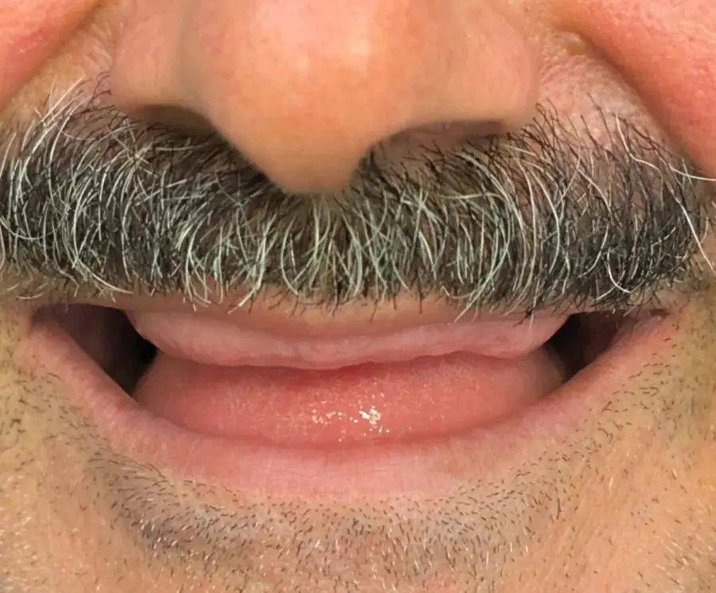

نسخه استخراجشده؛ ترجمه یا تأیید علمی انجام نشده است. وضعیت: captured
بیمار بیدندانی برای درمان پروتز متحرک آمده است. بدون هیچ دنچری، چند میلیمتر از لثه و ریج فک بالا در حالت استراحت لب دیده میشود و در لبخند مقدار خیلی بیشتری. دنچر این نما را میپوشاند یا بدترش میکند؟

این میزان نمایش ریج، پیش از هرگونه بازسازی، یک یافتهی غیرعادی و قابل توجه در ارزیابی اولیه است.
میتوان حدس زد بیمار پیش از از دست دادن دندانها احتمالاً lipline بالا یا نوعی gummy smile داشته است. اما در تصمیم درمانی موضوع اصلی گذشتهی بیمار نیست؛ نتیجهی نهایی درمان است که باید از ابتدا پیشبینی شود.
در این کیس، پیش از ورود به فاز پروتزی باید به اصلاح بستر توجه شود؛ یعنی درمان از جراحی شروع میشود، نه از قالبگیری.
اگر تصمیم به درمان ایمپلنتمحور (مثلاً اوردنچر) وجود داشته باشد، لازم است پیش از آن با جراح دربارهی انجام استئوپلاستی برای کاهش و فرمدهی ریج مشورت شود.
در پروتز تنها جایگزینی دندانها مطرح نیست؛ بستر زیرین و نحوهی دیده شدن آن در لبخند بخشی از نتیجهی نهایی درمان است.
گاهی بهترین تصمیم پروتزی از اتاق جراحی شروع میشود.